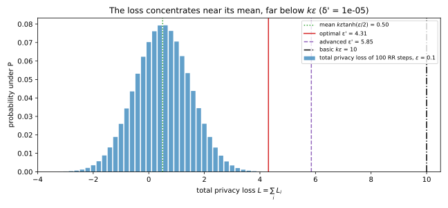
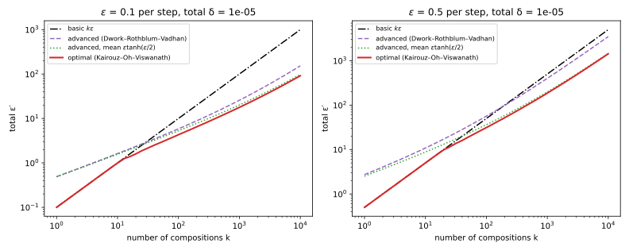
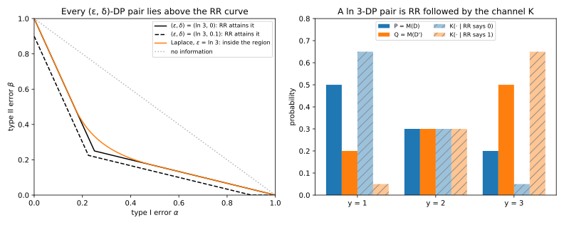
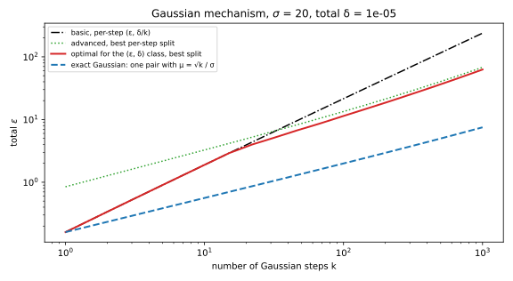

21 Advanced and optimal composition
21.1 Why this matters
A differentially private system rarely answers one query. A dashboard refreshes a hundred counts, an analyst explores a dataset with dozens of queries, and a training run takes thousands of noisy gradient steps. Each step satisfies \((\varepsilon, \delta)\)-differential privacy (DP): for any two neighbouring datasets \(D\) and \(D'\), which differ in one person’s record, the probability of any set of outputs changes by at most a factor \(e^\varepsilon\), plus a small slack \(\delta\). You need the same kind of guarantee for the whole run. Post-processing, group privacy and composition gave the first answer, basic composition: \(k\) mechanisms that are each \(\varepsilon\)-DP are together \(k\varepsilon\)-DP, because the factors \(e^\varepsilon\) of the \(k\) steps multiply. That answer is correct, and for large \(k\) it is far too pessimistic. A hundred queries at \(\varepsilon = 0.1\) give \(k\varepsilon = 10\). Since \(\varepsilon\)-DP says that no output is more than \(e^\varepsilon\) times likelier under one dataset than under the other, an attacker’s odds that the data are \(D\) rather than \(D'\) can be multiplied by up to \(e^{10} \approx 22{,}000\) by what it sees. Nothing that weak is worth stating. Yet at \(\delta = 10^{-5}\) the same hundred queries are \((4.31, 10^{-5})\)-DP, and no analysis that knows only each query’s \(\varepsilon\) can say less (Section 21.5).
This chapter explains where the gap comes from and how to close it, in three steps. The first question is how fast privacy really degrades under composition. The answer is like \(\sqrt k\), not \(k\), once you allow a small \(\delta\); this is advanced composition. The second question is what the best possible bound is. It turns out to be one you can compute exactly, because one simple mechanism, randomized response, is the worst \((\varepsilon, \delta)\)-DP mechanism there is; this is optimal composition. The third question is whether any of this survives an analyst who chooses each query after seeing the earlier answers. It does; this is adaptive composition.
21.1.1 The one idea: the privacy loss of a composition is a sum
Run a mechanism \(M\) on the dataset \(D\) and look at the output \(Y\). Ask how much more likely this output was under \(D\) than under the neighbour \(D'\). The ratio of the two probabilities (or densities) says it, and its logarithm turns it into an additive amount of evidence: positive when \(Y\) favours \(D\), negative when it favours \(D'\), zero when it says nothing. This log ratio is the privacy loss random variable, \[L = L_{D,D'}(Y) = \ln\frac{p_{M(D)}(Y)}{p_{M(D')}(Y)}, \qquad Y \sim M(D). \tag{21.1}\] It is a random variable because \(Y\) is random, and its distribution, with \(Y\) drawn from \(M(D)\), is the privacy loss distribution. Pure \(\varepsilon\)-DP says that no output is more than \(e^\varepsilon\) times likelier under one dataset than under the other, in either direction, so \(|L| \le \varepsilon\) for every output. Now run \(k\) mechanisms. The probability of the whole sequence of outputs is the product of the probabilities of the individual outputs, a ratio of two products is the product of the ratios, and the logarithm turns that product into a sum. So the total privacy loss is the sum \(L_1 + \dots + L_k\) of the per-step losses (Fact 2 below).
Basic composition bounds that sum by \(k\varepsilon\), as if every step produced its worst output. But a sum of \(k\) bounded random terms concentrates around its mean, and the extreme value needs every term to be extreme at once. Take \(k = 100\) steps of randomized response at \(\varepsilon = 0.1\): each step reports a person’s bit truthfully with probability \(t = e^{0.1}/(1 + e^{0.1}) = 0.5250\) and flips it otherwise. The total loss has mean 0.50 and standard deviation 1.00 (Section 21.3 derives both). The value \(k\varepsilon = 10\) sits \((10 - 0.50)/1.00 = 9.5\) standard deviations above the mean, and it needs all 100 reports to be truthful, which has probability \(t^{100} = 1.0\times10^{-28}\). The slack \(\delta\) in \((\varepsilon, \delta)\)-DP is exactly an allowance for rare bad outputs. So every result in this chapter bounds the tail of a sum of privacy losses, instead of its maximum, and pays for the tail with \(\delta\). Table 21.1 lists the results and where each is used.
| Result | Where it is used |
|---|---|
| The privacy loss random variable; \(\delta(\varepsilon)\) as its average | Every accountant in Privacy accounting |
| The loss of a composition is a sum | All composition theorems, adaptive or not |
| Advanced composition (Dwork, Rothblum & Vadhan) | Quick \(\sqrt k\) budgets; the classic analysis of iterative algorithms |
| Randomized response is the worst \((\varepsilon, \delta)\) mechanism | Optimal composition; the sharp mean loss \(\varepsilon\tanh(\varepsilon/2)\) |
| Optimal composition (Kairouz, Oh & Viswanath), computed exactly | The best bound for any \(k\) mechanisms known only by their \((\varepsilon, \delta)\) |
| Adaptive composition | Interactive query systems, iterative training, hyperparameter search |
What you need. The definition of \((\varepsilon, \delta)\)-DP, randomized response and the hockey-stick form are in The definition of differential privacy. Basic composition is in Post-processing, group privacy and composition. From Part 1 you need the hockey-stick divergence, the Kullback–Leibler (KL) divergence and the data-processing inequality (Divergences), trade-off functions (Hypothesis testing) and Azuma’s inequality (Concentration inequalities). Each is restated below where it is used.
Notation. \(M\) is a mechanism and \(D \simeq D'\) are neighbours. \(P = M(D)\) and \(Q = M(D')\) are the two output distributions, with mass functions or densities \(p\) and \(q\). \(L\) is the privacy loss of Equation 21.1. The definition of \((\varepsilon, \delta)\)-DP asks that \(P(S) \le e^\varepsilon Q(S) + \delta\) for every set of outputs \(S\), so for one ordered pair the smallest \(\delta\) that works is the largest gap \(P(S) - e^\varepsilon Q(S)\) over all sets. That gap is largest when \(S\) holds exactly the outputs with \(p(y) > e^\varepsilon q(y)\), since each such output adds a positive amount and every other output would subtract. The largest gap is the hockey-stick divergence \(E_{e^\varepsilon}(P\|Q) = \sum_y\big(p(y) - e^\varepsilon q(y)\big)_+\), where \((x)_+ = \max\{x, 0\}\), and we write \(\delta(\varepsilon) = E_{e^\varepsilon}(P\|Q)\) for the smallest \(\delta\) that works for a given \(\varepsilon\), in one direction. DP asks for this in both directions, for every pair of neighbours. Randomized response at level \(\varepsilon\) reports a bit truthfully with probability \(t = e^\varepsilon/(1 + e^\varepsilon)\). Logarithms are natural.
21.2 Toolkit: three facts every derivation uses
21.2.1 Fact 1 — \(\delta(\varepsilon)\) is an average of the privacy loss
The hockey-stick sum looks like a property of two whole distributions, but each output’s contribution depends only on its own privacy loss. An output whose loss is at most \(\varepsilon\) contributes nothing. An output that is impossible under \(D'\), with infinite loss, contributes its whole probability. Outputs in between contribute part of their probability, more the larger the loss. So \(\delta(\varepsilon)\) is an average over the output, drawn from \(P\), of a function of the loss, and it is at most the probability that the loss exceeds \(\varepsilon\). For any pair \((P, Q)\) and any \(\varepsilon\), \[\delta(\varepsilon) = E_{e^\varepsilon}(P\|Q) = \sum_y\big(p(y) - e^\varepsilon q(y)\big)_+ = \mathbb E\big[(1 - e^{\varepsilon - L})_+\big] \le \Pr[L > \varepsilon]. \tag{21.2}\]
To see the middle equality, factor \(p(y)\) out of each term: \((p - e^\varepsilon q)_+ = p\,(1 - e^\varepsilon q/p)_+\), and \(e^\varepsilon q/p = e^{\varepsilon - \ln(p/q)} = e^{\varepsilon - L(y)}\). A sum of \(p(y)\) times something over all \(y\) is the expectation of that something when \(Y\) is drawn from \(P\). For the inequality, look at the bracket: when \(L \le \varepsilon\) the exponent \(\varepsilon - L\) is non-negative, \(e^{\varepsilon - L} \ge 1\), and the bracket is 0. When \(L > \varepsilon\) the bracket is \(1 - e^{\varepsilon - L}\), which is below 1. So the bracket is at most the indicator of \(L > \varepsilon\), and its average is at most \(\Pr[L > \varepsilon]\).
A concrete case: randomized response at \(\varepsilon = \ln 3\) has \(t = 3/(1 + 3) = \frac34\). Take a person whose bit is 0 in \(D\) and 1 in \(D'\). A report of 0 has probability \(\frac34\) under \(D\) and \(\frac14\) under \(D'\), so its loss is \(\ln 3\); a report of 1 has loss \(-\ln 3\). Under \(D\) the loss is therefore \(+\ln 3\) with probability \(\frac34\) and \(-\ln 3\) with probability \(\frac14\). At \(\varepsilon = 0\) the bracket is \(1 - e^{-\ln 3} = 1 - \frac13\) for the first value and \((1 - 3)_+ = 0\) for the second, so \(\delta(0) = \frac34(1 - \frac13) = \frac12\). At \(\varepsilon = 0\) the hockey-stick sum is \(\sum_y(p - q)_+\), the largest difference \(P(S) - Q(S)\) over sets of outputs, which is the total variation distance between the two output distributions. Here it is \(\frac34 - \frac14 = \frac12\), as it should be.
The use of this fact is that a composition theorem only has to bound the distribution of the total privacy loss. The tail bound \(\Pr[L > \varepsilon]\) is the cheap version, and Equation 21.2 is the exact one.
21.2.2 Fact 2 — The privacy loss of a composition is a sum
Run \(M_1, \dots, M_k\) in sequence, where \(M_i\) may depend on the earlier outputs \(y_{<i} = (y_1, \dots, y_{i-1})\). The probability of a whole sequence of outputs is built one step at a time: the probability of \(y_1\), times the probability of \(y_2\) given \(y_1\), and so on (the chain rule of probability). Write \(p_i(y_i \mid y_{<i})\) for the probability that step \(i\) outputs \(y_i\) on \(D\) after the history \(y_{<i}\), and \(q_i\) for the same on \(D'\). Then the joint output has density \(p(y_1, \dots, y_k) = \prod_i p_i(y_i \mid y_{<i})\) on \(D\), and likewise with \(q_i\) on \(D'\). The ratio of the two products is the product of the step-by-step ratios, and the logarithm of a product is the sum of the logarithms: \[L(y_1, \dots, y_k) = \sum_{i=1}^k L_i(y_i \mid y_{<i}), \qquad L_i(y_i \mid y_{<i}) = \ln\frac{p_i(y_i \mid y_{<i})}{q_i(y_i \mid y_{<i})}. \tag{21.3}\] Each term \(L_i\) is the privacy loss of step \(i\) alone, for the mechanism that was run after that history.
A concrete case: two rounds of randomized response at \(\varepsilon = \ln 3\), on a person whose bit is 0 in \(D\) and 1 in \(D'\). Each round reports 0 with probability \(\frac34\) on \(D\) and \(\frac14\) on \(D'\), independently, so for instance \(p(0, 0) = \frac34 \cdot \frac34 = \frac9{16}\) and \(q(0, 0) = \frac14 \cdot \frac14 = \frac1{16}\). Table 21.2 lists the four outputs. Each loss is the sum of two per-round terms \(\pm\ln 3\): the output \((0, 1)\) has loss \(\ln 3 - \ln 3 = 0\), because one report favours \(D\) as much as the other favours \(D'\).
| Output \((y_1, y_2)\) | \((0, 0)\) | \((0, 1)\) | \((1, 0)\) | \((1, 1)\) |
|---|---|---|---|---|
| \(p\) (bit 0) | 9/16 | 3/16 | 3/16 | 1/16 |
| \(q\) (bit 1) | 1/16 | 3/16 | 3/16 | 9/16 |
| \(L = \ln(p/q)\) | \(2\ln 3\) | 0 | 0 | \(-2\ln 3\) |
So the total loss is a sum of terms, and each term is bounded by its own step’s guarantee, whatever the history: if step \(i\) is \(\varepsilon\)-DP for every history, then \(|L_i| \le \varepsilon\). Adding \(k\) such bounds gives \(|L| \le k\varepsilon\), which is basic composition. The rest of this chapter bounds the same sum more cleverly.
21.2.3 Fact 3 — The mean privacy loss of an \(\varepsilon\)-DP pair is second order in \(\varepsilon\)
The loss can be as large as \(\varepsilon\), but on average it is much smaller. When \(\varepsilon\) is small, an output that favours \(D\) is only slightly more likely than one that favours \(D'\), so positive and negative losses nearly cancel, and what is left over is of order \(\varepsilon^2\). The average loss under \(P\) is \(\sum_y p(y)\ln(p(y)/q(y))\), which is by definition the KL divergence \(D_{\mathrm{KL}}(P\|Q)\). If \(|L| \le \varepsilon\) everywhere, then \[\mathbb E[L] = D_{\mathrm{KL}}(P\|Q) \le \varepsilon(e^\varepsilon - 1). \tag{21.4}\]
The derivation makes the cancellation visible by pairing each \(p\) with its \(q\).
- Symmetrize. The KL divergence is never negative (Divergences): by Jensen’s inequality for the concave logarithm, \(-D_{\mathrm{KL}}(Q\|P) = \sum_y q\ln(p/q) \le \ln\sum_y q\,(p/q) = \ln 1 = 0\). So adding \(D_{\mathrm{KL}}(Q\|P) \ge 0\) to \(\mathbb E[L]\) can only increase it, and the two sums combine term by term: \(\mathbb E[L] \le \sum_y p\ln\frac pq + \sum_y q\ln\frac qp = \sum_y (p - q)\ln\frac pq\).
- Use the bound on the loss. Each \(|\ln(p/q)|\) is at most \(\varepsilon\), so the sum is at most \(\varepsilon\sum_y|p - q|\). This is where the cancellation pays off: the factor \(\sum_y|p - q|\) is itself small when \(P\) and \(Q\) are close.
- Bound the total difference. Write \(\sum_y|p - q| = \sum_y q\,|p/q - 1|\). The ratio \(r = p/q\) lies in \([e^{-\varepsilon}, e^\varepsilon]\), and on that interval \(|r - 1|\) is largest at \(r = e^\varepsilon\), where it is \(e^\varepsilon - 1\) (at the other end it is \(1 - e^{-\varepsilon}\), which is smaller). Since the \(q(y)\) sum to 1, \(\sum_y|p - q| \le e^\varepsilon - 1\), and the bound follows.
Why this matters: the loss is bounded by \(\varepsilon\), but its average is of order \(\varepsilon^2\), because \(e^\varepsilon - 1 \approx \varepsilon\) for small \(\varepsilon\). At \(\varepsilon = 0.1\) the bound is \(0.1(e^{0.1} - 1) = 0.0105\). Over \(k\) steps the mean grows like \(k\varepsilon^2\), much slower than the worst case \(k\varepsilon\).
How tight is it? Not very. The optimal-composition section (Section 21.5) shows that the best bound is \(\varepsilon\tanh(\varepsilon/2)\), attained by randomized response. Since \(\tanh(\varepsilon/2) \approx \varepsilon/2\) while \(e^\varepsilon - 1 \approx \varepsilon\), the sharp bound is about half of Equation 21.4 for small \(\varepsilon\): it is 0.0050 at \(\varepsilon = 0.1\). At \(\varepsilon = 1\) the gap is wider, 0.4621 against 1.7183.
21.3 The privacy loss of a composition
21.3.1 Context
Basic composition charges \(k\varepsilon\), the largest value the total loss can take. Before improving on it, look at the whole distribution of the total loss for the simplest mechanism, randomized response composed \(k\) times. It shows how unlikely the worst case is, and it turns out to be the worst case for every later result.
21.3.2 Statement
Compose \(k\) rounds of randomized response at level \(\varepsilon\), on a person whose bit is 0 in \(D\) and 1 in \(D'\). A report of 0 is the truth under \(D\), so it points to \(D\); a report of 1 points to \(D'\). Under \(D\), each report points to \(D'\) only when it is a lie, which happens with probability \(1 - t\). Let \(J\) be the number of rounds whose report points to \(D'\). Each such round contributes \(-\varepsilon\) to the loss and each other round \(+\varepsilon\), so the whole loss is fixed by \(J\). Under \(D\), \[J \sim \mathrm{Bin}(k, 1 - t), \qquad L = (k - 2J)\varepsilon, \tag{21.5}\] and the loss has mean, standard deviation and worst-case probability \[\mathbb E[L] = k\varepsilon\tanh(\varepsilon/2), \qquad \operatorname{sd}(L) = \varepsilon\sqrt{k\big(1 - \tanh^2(\varepsilon/2)\big)}, \qquad \Pr[L = k\varepsilon] = t^k. \tag{21.6}\]
21.3.3 Derivation
- One round. A truthful report has probability \(t\) under \(D\) and \(1 - t\) under \(D'\), so its loss is \(\ln\frac{t}{1 - t} = \ln e^\varepsilon = \varepsilon\), because \(t/(1 - t) = e^\varepsilon\) by the definition of \(t\). A lie has the two probabilities swapped and loss \(-\varepsilon\).
- \(k\) rounds. By Fact 2 the total is the sum of the \(k\) per-round losses, and the rounds are independent. \(J\) rounds contribute \(-\varepsilon\) and \(k - J\) contribute \(+\varepsilon\), so \(L = (k - J)\varepsilon - J\varepsilon = (k - 2J)\varepsilon\). Each round points to \(D'\) independently with probability \(1 - t\), so \(J\) counts successes in \(k\) independent trials and is binomial.
- Mean. One round has mean \(\varepsilon t - \varepsilon(1 - t) = \varepsilon(2t - 1)\). Substituting \(t\) gives \(2t - 1 = \frac{2e^\varepsilon - (1 + e^\varepsilon)}{1 + e^\varepsilon} = \frac{e^\varepsilon - 1}{e^\varepsilon + 1}\), and this is \(\tanh(\varepsilon/2)\), because \(\tanh x = \frac{e^{2x} - 1}{e^{2x} + 1}\). The mean of a sum is the sum of the means, so multiply by \(k\).
- Standard deviation. One round takes the two values \(\pm\varepsilon\), so its square is always \(\varepsilon^2\) and its variance is \(\varepsilon^2 - (\text{mean})^2 = \varepsilon^2(1 - \tanh^2(\varepsilon/2))\). Variances of independent terms add, so the total variance is \(k\) times this; take the square root.
- The worst case \(L = k\varepsilon\) needs \(J = 0\): every report truthful, which has probability \(t^k\).
21.3.4 Interpretation
The worst case is absurdly rare. For \(k = 100\) and \(\varepsilon = 0.1\), \(t = 0.5250\) and \(t^k = 1.0\times10^{-28}\). Basic composition guards against an event that will never happen.
What does happen is set by the mean and the spread. For small \(\varepsilon\), \(\tanh(\varepsilon/2) \approx \varepsilon/2\), so the mean is about \(k\varepsilon^2/2\) and the standard deviation about \(\sqrt k\,\varepsilon\) (the factor \(1 - \tanh^2\) is close to 1). With \(k = 100\) and \(\varepsilon = 0.1\), the mean is 0.4996 and the standard deviation 0.9988. Both are far below \(k\varepsilon = 10\) (Figure 21.1).
A sum of many small, independent, bounded terms is nearly normal: that is the central limit theorem. So the total loss is close to a normal distribution with this mean and spread. The optimal \(\varepsilon'\) at \(\delta = 10^{-5}\) that Section 21.5 computes, 4.31, sits \((4.3068 - 0.4996)/0.9988 = 3.8\) standard deviations above the mean, far enough into the tail that only a sliver of a normal distribution lies beyond it. The rest of the chapter turns this picture into theorems. The normal approximation itself is the starting point of the Gaussian view of privacy in Privacy accounting.

21.3.5 Example: a hundred noisy counts
A dashboard releases 100 counts, each with its own randomized-response or Laplace noise at \(\varepsilon = 0.1\). Basic composition reports \(\varepsilon = 10\). The loss distribution of composed randomized response, which Section 21.5 shows is the worst case for \(0.1\)-DP steps, says that the total privacy loss of any one person’s data exceeds 4 only rarely. The loss \((k - 2J)\varepsilon = (100 - 2J) \times 0.1\) is above 4 only when \(100 - 2J > 40\), that is \(J < 30\). But \(J\) has mean \(100(1 - t) = 47.5\) and standard deviation \(\sqrt{100\,t(1 - t)} = 5\), so \(J < 30\) is about 3.5 standard deviations below its mean. The next two sections compute how rarely, first with a simple bound and then exactly.
21.3.6 Check yourself
- Why is the mean of the total loss non-negative, even though half the per-round losses can be negative? (The mean is the KL divergence between the two output distributions of the whole run, which is non-negative. Each round is more likely to point to the truth than away from it.)
- If you double \(k\), how do the mean and the standard deviation of the total loss change? (The mean doubles; the standard deviation grows by \(\sqrt 2\), because the variance doubles.)
21.4 Advanced composition
21.4.1 Context
Dwork, Rothblum & Vadhan (2010) were the first to exploit the concentration of the total loss. Their theorem needs only the per-step guarantee \((\varepsilon, \delta)\), holds for any mechanisms chosen in any adaptive way, and gives a bound that grows like \(\sqrt k\). The tool is Azuma’s inequality, a version of Hoeffding’s inequality for sums whose terms may depend on the earlier terms. With it the bound takes five lines.
21.4.2 Statement
The total loss is a sum of \(k\) terms, each in \([-\varepsilon, \varepsilon]\), with a small positive mean. So it is the sum of a drift, the \(k\) means added up, and a fluctuation around the drift. The fluctuation of \(k\) terms of range \(2\varepsilon\) is of order \(\varepsilon\sqrt k\), and Azuma’s inequality says how far above its mean it goes with probability at most \(\delta'\). The drift is at most \(k\varepsilon(e^\varepsilon - 1)\) by Fact 3. Adding the two gives the bound. For every \(\delta' > 0\), the composition of \(k\) mechanisms that are each \((\varepsilon, \delta)\)-DP, chosen adaptively, is \((\varepsilon', k\delta + \delta')\)-DP with \[\varepsilon' = \varepsilon\sqrt{2k\ln(1/\delta')} + k\varepsilon(e^\varepsilon - 1). \tag{21.7}\] With the sharp mean loss of the next section, the drift term improves to \(k\varepsilon\tanh(\varepsilon/2)\): \[\varepsilon' = \varepsilon\sqrt{2k\ln(1/\delta')} + k\varepsilon\tanh(\varepsilon/2). \tag{21.8}\]
21.4.3 Derivation
Take \(\delta = 0\) first: every step is \(\varepsilon\)-DP for every history. The case \(\delta > 0\) is at the end of the derivation in Section 21.5. Section B.2 in the appendices derives the case \(\delta = 0\) from scratch, with worked numbers.
- The loss is a sum. By Fact 2, \(L = \sum_i L_i\), where \(L_i\) is the loss of step \(i\) given the history \(y_{<i}\).
- Each term is bounded, given the past. For every fixed history, step \(i\) is \(\varepsilon\)-DP, so \(L_i \in [-\varepsilon, \varepsilon]\).
- Each term has a small conditional mean. Given the history, the average of \(L_i\) over step \(i\)’s output is \(m_i = \mathbb E[L_i \mid y_{<i}] = \sum_{y_i}p_i\ln(p_i/q_i)\), which is the KL divergence of step \(i\)’s pair. So \(m_i \le \varepsilon(e^\varepsilon - 1)\) by Fact 3.
- Centre the terms to get a martingale. A martingale is a running sum whose next increment has mean zero given everything that happened before. Subtracting each term’s conditional mean makes one: \(M_k = \sum_i(L_i - m_i)\) has increments with conditional mean zero. Given the past, \(L_i - m_i\) lies in \([-\varepsilon - m_i, \varepsilon - m_i]\), an interval of length \(d_i = 2\varepsilon\), whose position depends on the past but whose length does not.
- Azuma. The Azuma–Hoeffding inequality (Concentration inequalities) says: if each increment of a martingale has conditional mean zero and lies, given the past, in an interval of length \(d_i\) fixed in advance, then the sum exceeds \(s\) with probability at most \(\exp(-2s^2/\sum_i d_i^2)\). It holds for the same reason as Hoeffding’s inequality: Hoeffding’s lemma bounds the conditional moment generating function of each increment using only its mean and the length of its range, and these bounds multiply one step at a time. With \(d_i = 2\varepsilon\), so \(\sum_i d_i^2 = 4k\varepsilon^2\), \[\Pr[M_k \ge s] \le \exp\left(-\frac{2s^2}{\sum_i d_i^2}\right) = \exp\left(-\frac{2s^2}{4k\varepsilon^2}\right) = \exp\left(-\frac{s^2}{2k\varepsilon^2}\right). \tag{21.9}\]
- Choose the level. Setting the right side to \(\delta'\) and solving, \(s^2 = 2k\varepsilon^2\ln(1/\delta')\), gives \(s = \varepsilon\sqrt{2k\ln(1/\delta')}\). The loss is the fluctuation plus the drift, \(L = M_k + \sum_i m_i \le M_k + k\varepsilon(e^\varepsilon - 1)\). So if \(L\) exceeds \(\varepsilon' = s + k\varepsilon(e^\varepsilon - 1)\) from Equation 21.7, then \(M_k\) must exceed \(s\), and \(\Pr[L > \varepsilon'] \le \delta'\).
- Convert. By Fact 1, \(\delta(\varepsilon') \le \Pr[L > \varepsilon'] \le \delta'\). The same argument with \(D\) and \(D'\) swapped gives the other direction, so the composition is \((\varepsilon', \delta')\)-DP.
Equation 21.8 is the same derivation with step 3 replaced by the bound \(m_i \le \varepsilon\tanh(\varepsilon/2)\), derived in Section 21.5.
21.4.4 Interpretation
The gain is \(\sqrt k\) instead of \(k\). The leading term grows like \(\varepsilon\sqrt k\). The price is \(\delta'\) and the factor \(\sqrt{2\ln(1/\delta')}\), which is \(\sqrt{2 \times 11.51} = 4.80\) at \(\delta' = 10^{-5}\). So advanced composition only helps once \(k\) is large enough for \(\sqrt k\) to beat this factor. Dividing both bounds by \(\varepsilon\), basic composition loses when \(k > \sqrt{2k\ln(1/\delta')} + k(e^\varepsilon - 1)\), that is when \(k > 2\ln(1/\delta')/(2 - e^\varepsilon)^2\). At \(\varepsilon = 0.1\) and \(\delta' = 10^{-5}\) this is \(23.03/0.8948^2 = 28.8\), so advanced composition beats basic composition from \(k = 29\) on (Exercise 2).
The mean term is second order. For small \(\varepsilon\), \(k\varepsilon(e^\varepsilon - 1) \approx k\varepsilon^2\). Compared with the leading term \(\varepsilon\sqrt k\), it matters when \(k\varepsilon^2\) is not small next to \(\varepsilon\sqrt k\), that is, when \(\varepsilon\sqrt k\) is of order 1 or more.
This gives a rule of thumb for budgeting. To be \((\varepsilon_{\text{total}}, \delta')\)-DP after \(k\) steps, set the leading term equal to the target and solve for the per-step budget: give each step roughly \(\varepsilon = \varepsilon_{\text{total}}/\sqrt{2k\ln(1/\delta')}\). With basic composition you would need \(\varepsilon_{\text{total}}/k\), which is much smaller.
The bound is loose in three places. Azuma assumes each increment could have the largest variance its range allows, \(\varepsilon^2\), as if the loss were always at one end of its range or the other. The mean bound of Fact 3 is a factor 2 too large for small \(\varepsilon\). And Fact 1’s tail bound \(\Pr[L > \varepsilon']\) counts every output above \(\varepsilon'\) in full, ignoring the factor \((1 - e^{\varepsilon' - L})\) that discounts outputs just above it. Together these make the guarantee far more conservative than it says: at \(k = 100\), \(\varepsilon = 0.1\), the exact \(\delta\) at the advanced \(\varepsilon' = 5.85\) is \(1.96\times10^{-9}\), not \(10^{-5}\).
There is a second route to the same theorem, without martingales. The optimal-composition section (Section 21.5) shows that every \((\varepsilon, \delta)\)-DP step is a post-processing of four-point randomized response, and that an adaptive run of \(k\) steps is a post-processing of \(k\) independent draws of it. Adaptivity then disappears from the analysis. Split the outputs of those \(k\) draws into three events. In the first, some draw announces the dataset, which happens with probability at most \(k\delta\). In the second, no draw announces it but the sum of the \(k\) independent \(\pm\varepsilon\) losses lands more than \(\varepsilon\sqrt{2k\ln(1/\delta')}\) above its mean, which Hoeffding’s inequality for independent terms bounds by \(\delta'\). On everything else the loss is at most \(\varepsilon'\). The three events show where each part of \(k\delta + \delta'\) comes from. The Azuma route is still worth having, because it works directly on any sequence of mechanisms, and the privacy filters of Adaptive composition build on it.
21.4.5 Example: a hundred counts at \(\varepsilon = 0.1\)
Take \(k = 100\), \(\varepsilon = 0.1\) and \(\delta' = 10^{-5}\). The Azuma term is \(0.1\sqrt{200\ln10^5} = 0.1\sqrt{2302.6} = 4.7985\), and the mean term is \(100 \times 0.1(e^{0.1} - 1) = 1.0517\), so \(\varepsilon' = 5.8502\). With the \(\tanh\) mean term, \(100 \times 0.1\tanh(0.05) = 0.4996\) and \(\varepsilon' = 4.7985 + 0.4996 = 5.2981\). Basic composition gives 10, and the optimal answer of the next section is 4.3068. Table 21.3 compares the bounds over \(k\), and Figure 21.2 plots them.
| \(k\) | Basic \(k\varepsilon\) | Advanced, Equation 21.7 | Advanced, Equation 21.8 | Optimal |
|---|---|---|---|---|
| 10 | 1.000 | 1.623 | 1.567 | 0.994 |
| 100 | 10.000 | 5.850 | 5.298 | 4.307 |
| 1,000 | 100.000 | 25.691 | 20.170 | 17.787 |
| 10,000 | 1,000.000 | 153.156 | 97.944 | 91.691 |
At \(k = 10\), both advanced bounds are worse than basic composition, because \(k = 10\) is below the crossover at 29; the optimal bound is slightly better, 0.994 against 1. At \(k = 10{,}000\) the order of the terms flips. The Azuma term is \(0.1\sqrt{20{,}000\ln10^5} = 48\), while the cruder mean term \(k\varepsilon(e^\varepsilon - 1) = 1{,}000 \times 0.105\) costs 105 of the 153, against \(1{,}000\tanh(0.05) = 50\) for the \(\tanh\) form. There the mean term matters more than the Azuma term, as the previous paragraph predicts: \(\varepsilon\sqrt k = 10\) is well above 1.
Laplace noise in many dimensions. Advanced composition also explains where the Gaussian mechanism’s advantage in high dimension comes from. Take \(d\) dense counts, where one record can move every count by 1, at \(\varepsilon = 1\) and \(\delta = 10^{-5}\). The Laplace mechanism on the whole vector must use its \(\ell_1\) sensitivity \(d\), so each count gets noise of scale \(d/\varepsilon\) and root-mean-square error \(\sqrt2\,d/\varepsilon\). But you can also treat the \(d\) counts as \(d\) separate Laplace mechanisms, each at a small \(\varepsilon_0\), and compose them. Advanced composition allows \(\varepsilon_0 = 0.00645\) for \(d = 1000\), and optimal composition \(\varepsilon_0 = 0.00849\); each count then has error \(\sqrt2/\varepsilon_0\). Table 21.4 compares these with the Gaussian mechanism, calibrated exactly to the \(\ell_2\) sensitivity \(\sqrt d\) as in The Laplace and Gaussian mechanisms.
| \(d\) | Laplace, pure DP | Laplace, advanced composition | Laplace, optimal composition | Gaussian |
|---|---|---|---|---|
| 100 | 141.4 | 69.3 | 52.3 | 37.3 |
| 1,000 | 1,414.2 | 219.2 | 166.6 | 118.0 |
| 10,000 | 14,142.1 | 693.0 | 527.5 | 373.1 |
Composed Laplace noise grows like \(\sqrt d\), as the Gaussian does: each tenfold increase in \(d\) multiplies it by about 3.2. It stays within a factor of 1.9 of the Gaussian, while pure-DP Laplace noise falls behind by a factor of 38 at \(d = 10{,}000\). So the \(\sqrt d\) gain comes from allowing \(\delta > 0\), through composition, and not from the shape of the Gaussian density. The Gaussian is still better by a constant factor, because its privacy loss is itself normal and composes exactly.

21.4.6 Check yourself
- Why does Azuma apply in step 5 even though the mechanism at step \(i\) depends on earlier outputs? (Azuma needs only that each centred increment has conditional mean zero and lies in an interval of fixed length given the past. Both hold for every history.)
- For fixed \(\varepsilon\), does advanced composition always beat basic composition for large enough \(k\)? (Only if \(e^\varepsilon - 1 < 1\), that is \(\varepsilon < \ln 2\). Otherwise the mean term \(k\varepsilon(e^\varepsilon - 1)\) alone is at least \(k\varepsilon\). The \(\tanh\) form beats basic composition for every \(\varepsilon\), since \(\tanh < 1\) leaves room for the \(\sqrt k\) term once \(k\) is large.)
21.5 Optimal composition
21.5.1 Context
Advanced composition is one bound among many you could derive. Which is the best? Fix \(k\), \(\varepsilon\) and \(\delta\), and ask for the smallest \(\delta(\varepsilon')\) that is guaranteed for every composition of \(k\) mechanisms that are each \((\varepsilon, \delta)\)-DP. Kairouz, Oh & Viswanath (2015) answered this exactly, with a surprisingly simple argument built on post-processing: passing an output through any further randomized step that does not look at the data. Post-processing can only make two output distributions harder to tell apart, so it never increases \(\delta(\varepsilon')\); this is the data-processing inequality. Kairouz, Oh & Viswanath showed that every \((\varepsilon, \delta)\)-DP mechanism is a post-processing of one particular mechanism, a version of randomized response. Then every composition of \((\varepsilon, \delta)\)-DP mechanisms is a post-processing of composed randomized response, and so can be no worse. The worst composition is composed randomized response, whose total loss Equation 21.5 you already know.
21.5.2 Statement
Randomized response is the worst. The worst mechanism needs to spend both parameters. It spends \(\delta\) by, with probability \(\delta\), announcing which dataset it ran on, and \(\varepsilon\) by otherwise running randomized response at level \(\varepsilon\). Its four outputs are listed in Table 21.5; call its two output distributions \(P^\star\) (on \(D\)) and \(Q^\star\) (on \(D'\)). A channel \(K\) is a table of probabilities \(K(y \mid z)\): given an input \(z\), it draws an output \(y\). Feeding \(P^\star\) through it gives the distribution \(P^\star K(y) = \sum_z P^\star(z)K(y \mid z)\), and this is exactly what post-processing does. The claim is that every pair \((P, Q)\) that satisfies \((\varepsilon, \delta)\)-DP in both directions can be produced this way: there is a channel \(K\) with \(P = P^\star K\) and \(Q = Q^\star K\).
For \(\delta = 0\) the channel is explicit. Plain randomized response outputs 0, the report that points to \(D\), with probability \(t\) on \(D\) and \(1 - t\) on \(D'\). So the channel must satisfy, for every output \(y\) of the target pair, \(p(y) = tK(y \mid 0) + (1 - t)K(y \mid 1)\) and \(q(y) = (1 - t)K(y \mid 0) + tK(y \mid 1)\). These are two linear equations in the two unknowns \(K(y \mid 0)\) and \(K(y \mid 1)\). Solving them, and using \(t/(1 - t) = e^\varepsilon\), gives \[K(y \mid 0) = \frac{e^\varepsilon p(y) - q(y)}{e^\varepsilon - 1}, \qquad K(y \mid 1) = \frac{e^\varepsilon q(y) - p(y)}{e^\varepsilon - 1}. \tag{21.10}\] The input that points to \(D\) spreads its mass over the outputs in proportion to how much \(P\) favours them, and the other input does the same for \(Q\).
| Output | “flag \(D\)” | 0 | 1 | “flag \(D'\)” |
|---|---|---|---|---|
| \(P^\star\) (on \(D\)) | \(\delta\) | \((1 - \delta)t\) | \((1 - \delta)(1 - t)\) | 0 |
| \(Q^\star\) (on \(D'\)) | 0 | \((1 - \delta)(1 - t)\) | \((1 - \delta)t\) | \(\delta\) |
| Privacy loss | \(+\infty\) | \(+\varepsilon\) | \(-\varepsilon\) | \(-\infty\) |
Optimal composition. Compose \(k\) copies of the four-point pair. Either some step announces the dataset, and then the output is impossible under \(D'\) and counts in full towards \(\delta(\varepsilon')\), or no step does, and then the run is \(k\) rounds of randomized response, whose loss is binomial by Equation 21.5. Fact 1 turns that binomial loss into a \(\delta\), which we call \(\delta_{\mathrm{RR}}(\varepsilon')\): the average of \((1 - e^{\varepsilon' - L})_+\) over the \(k + 1\) possible values of \(J\). For every composition of \(k\) mechanisms that are each \((\varepsilon, \delta)\)-DP, adaptive or not, and every \(\varepsilon' \ge 0\), \[\delta(\varepsilon') \le 1 - (1 - \delta)^k\big(1 - \delta_{\mathrm{RR}}(\varepsilon')\big), \qquad \delta_{\mathrm{RR}}(\varepsilon') = \sum_{j=0}^k\binom kj t^{k-j}(1 - t)^j\big(1 - e^{\varepsilon' - (k - 2j)\varepsilon}\big)_+, \tag{21.11}\] with equality for \(k\) independent copies of the four-point pair. The binomial weight \(\binom kj t^{k-j}(1 - t)^j\) is the probability that exactly \(j\) of the \(k\) reports point to \(D'\). At the points where \(\varepsilon'\) equals one of the values the loss can take, \(\varepsilon' = (k - 2i)\varepsilon\) for \(i = 0, \dots, \lfloor k/2\rfloor\), the positive part can be dropped and the sum becomes a ratio of exponentials. This is the formula of Kairouz, Oh & Viswanath’s main theorem: \[\delta_{\mathrm{RR}}\big((k - 2i)\varepsilon\big) = \frac{\sum_{\ell=0}^{i-1}\binom k\ell\big(e^{(k-\ell)\varepsilon} - e^{(k - 2i + \ell)\varepsilon}\big)}{(1 + e^\varepsilon)^k}. \tag{21.12}\]
The sharp mean loss. The KL divergence, like \(\delta(\varepsilon')\), can only shrink under post-processing. Since every \(\varepsilon\)-DP pair is a post-processing of randomized response, its mean loss is at most that of randomized response: \[\mathbb E[L] = D_{\mathrm{KL}}(P\|Q) \le \varepsilon\tanh(\varepsilon/2), \tag{21.13}\] with equality for randomized response.
21.5.3 Derivation
The channel for \(\delta = 0\). The formula came from solving two equations; here we check that it is a valid channel and that it does what it should. Recall that randomized response outputs 0 with probability \(t\) on \(D\) and \(1 - t\) on \(D'\) (here 0 is the report that points to \(D\)).
- The rows are distributions. A channel’s rows must be non-negative and sum to 1. \(K(y \mid 0) \ge 0\) exactly when \(e^\varepsilon p(y) \ge q(y)\), that is \(p(y) \ge e^{-\varepsilon}q(y)\), and \(K(y \mid 1) \ge 0\) exactly when \(p(y) \le e^\varepsilon q(y)\). Both hold for every \(y\) because the pair is \(\varepsilon\)-DP: no output is more than \(e^\varepsilon\) times likelier under one side than the other. Since \(p\) and \(q\) each sum to 1, each row sums to \((e^\varepsilon - 1)/(e^\varepsilon - 1) = 1\).
- They reproduce \(P\). Mixing the rows with randomized response’s probabilities on \(D\) gives \(t\,K(y \mid 0) + (1 - t)K(y \mid 1) = \frac{(te^\varepsilon - (1 - t))p + ((1 - t)e^\varepsilon - t)q}{e^\varepsilon - 1}\). With \(t = e^\varepsilon/(1 + e^\varepsilon)\), \((1 - t)e^\varepsilon = t\), so the coefficient of \(q\) is 0 and the coefficient of \(p\) is \(\frac{t e^\varepsilon - (1 - t)}{e^\varepsilon - 1} = \frac{(e^{2\varepsilon} - 1)/(1 + e^\varepsilon)}{e^\varepsilon - 1} = 1\), since \(e^{2\varepsilon} - 1 = (e^\varepsilon - 1)(e^\varepsilon + 1)\).
- They reproduce \(Q\). The same computation with \(t\) and \(1 - t\) swapped.
The channel for \(\delta > 0\). Here the construction is not a one-line formula, and we cite it, after explaining why it must exist. Think of telling \(P\) from \(Q\) as a hypothesis test. The trade-off function of a pair records, for each false positive rate \(\alpha\), the smallest false negative rate any test can reach: the higher the curve, the harder the pair is to test. The definition of differential privacy shows that a pair is \((\varepsilon, \delta)\)-DP exactly when its trade-off function lies above a fixed boundary \(f_{\varepsilon,\delta}\), made of two straight lines that come from applying the DP inequality to a test’s rejection set and to its complement. The four-point pair sits exactly on that boundary: its likelihood-ratio tests have errors at the corners of the boundary, and mixing them traces the lines. So every \((\varepsilon, \delta)\)-DP pair is at least as hard to test as \((P^\star, Q^\star)\), at every level. Blackwell’s theorem (1953) says that one pair is at least as hard to test as another at every level exactly when it is a post-processing of the other. Kairouz, Oh & Viswanath (2015) construct the channel explicitly, and Section J.1 in the appendices derives it step by step, by splitting each distribution into an \(\varepsilon\)-DP part of mass \(1 - \delta\) and a leftover of mass \(\delta\).
Composition. The argument uses the data-processing inequality for the hockey-stick divergence (Divergences): post-processing never increases \(\delta(\varepsilon')\). Here is why. Take any set \(S\) of final outputs. After the channel, \(P^\star K(S) - e^{\varepsilon'}Q^\star K(S) = \sum_z\phi(z)\big(P^\star(z) - e^{\varepsilon'}Q^\star(z)\big)\) with \(\phi(z) = K(S \mid z) \in [0, 1]\). Each term is at most \(\big(P^\star(z) - e^{\varepsilon'}Q^\star(z)\big)_+\), so the gap after the channel is at most the hockey-stick sum before it.
- Non-adaptive. If step \(i\) is \(P_i = P^\star K_i\) and \(Q_i = Q^\star K_i\), then the product \(P_1 \times \dots \times P_k\) is \((P^\star)^k\) followed by the channel that applies \(K_i\) to coordinate \(i\), independently. So \(\delta(\varepsilon')\) of the composition is at most that of \((P^\star)^k\) against \((Q^\star)^k\).
- Adaptive. Now the mechanism of step \(i\), and so its channel, may depend on the earlier outputs: \(K_i^{y_{<i}}\). The trick is to draw all the randomized-response inputs first and apply the channels afterwards. Draw \(z_1, \dots, z_k\) from \((P^\star)^k\), then \(y_1 \sim K_1(\cdot \mid z_1)\), then \(y_2 \sim K_2^{y_1}(\cdot \mid z_2)\), and so on. Given \(y_{<i}\), \(z_i\) is still a fresh draw from \(P^\star\), because it was drawn independently of \(z_{<i}\) and \(y_{<i}\) depends only on those. So \(y_i\) has law \(P^\star K_i^{y_{<i}} = P_i(\cdot \mid y_{<i})\), and the sequence has exactly the law of the adaptive run on \(D\). The same sampler fed with \((Q^\star)^k\) produces the run on \(D'\). So the adaptive run is still one post-processing of \((P^\star)^k\) against \((Q^\star)^k\).
- The four-point product. Each coordinate of \((P^\star)^k\) avoids “flag \(D\)” with probability \(1 - \delta\), independently, so with probability \(1 - (1 - \delta)^k\) some coordinate shows “flag \(D\)”. \((Q^\star)^k\) never produces that output, so there \(L = +\infty\), the bracket \((1 - e^{\varepsilon' - L})_+\) equals 1, and every such output contributes its full probability to Equation 21.2. Outputs with “flag \(D'\)” have probability 0 under \((P^\star)^k\) and contribute nothing. Otherwise, with probability \((1 - \delta)^k\), all coordinates are plain randomized response. On these outputs both \(P^\star\) and \(Q^\star\) carry the same factor \((1 - \delta)\) per coordinate, which cancels in the ratio, so \(L = (k - 2J)\varepsilon\) by Equation 21.5. Fact 1 on this part gives \((1 - \delta)^k\delta_{\mathrm{RR}}(\varepsilon')\). Adding the two parts, \(1 - (1 - \delta)^k + (1 - \delta)^k\delta_{\mathrm{RR}}(\varepsilon')\), which is Equation 21.11.
- Equality. The four-point pair is itself a mechanism, on a dataset of one bit, and it is \((\varepsilon, \delta)\)-DP. Composing \(k\) copies of it gives equality. No better bound can hold for the whole class.
- The grid formula. At \(\varepsilon' = (k - 2i)\varepsilon\), the terms of \(\delta_{\mathrm{RR}}\) with \(j \ge i\) vanish: their loss \((k - 2j)\varepsilon\) is at most \(\varepsilon'\), so the bracket is 0. For \(j = \ell < i\), the bracket is positive and the \((\cdot)_+\) can be dropped. Since \(t = e^\varepsilon/(1 + e^\varepsilon)\) and \(1 - t = 1/(1 + e^\varepsilon)\), the weight is \(\binom k\ell t^{k-\ell}(1-t)^\ell = \binom k\ell e^{(k-\ell)\varepsilon}/(1 + e^\varepsilon)^k\). Multiplying it by \(e^{\varepsilon' - (k - 2\ell)\varepsilon} = e^{(2\ell - 2i)\varepsilon}\) turns \(e^{(k-\ell)\varepsilon}\) into \(e^{(k - 2i + \ell)\varepsilon}\). This is Equation 21.12.
The sharp mean loss. KL divergence also obeys the data-processing inequality: post-processing cannot increase it, for the same reason as above, since passing two distributions through the same channel can only make them more alike. An \(\varepsilon\)-DP pair is a post-processing of randomized response, so its KL is at most that of randomized response, \(\varepsilon t - \varepsilon(1 - t) = \varepsilon\tanh(\varepsilon/2)\) (step 3 of the derivation in Section 21.3 with \(k = 1\)). That gives Equation 21.13, and with it Equation 21.8.
Advanced composition with \(\delta > 0\). By step 2 it suffices to bound the four-point product. A flag shows with probability \(1 - (1 - \delta)^k\), which is at most \(k\delta\) because the chance that at least one of \(k\) events happens is at most the sum of their chances. Otherwise the run is \(k\) rounds of randomized response, a pure \(\varepsilon\)-DP composition, whose \(\delta\) at the advanced \(\varepsilon'\) is at most \(\delta'\) by the \(\delta = 0\) derivation. So the total is at most \(k\delta + \delta'\), which completes Equation 21.7.
21.5.4 Interpretation
“Optimal” means optimal for the class. Equation 21.11 is the best you can say about \(k\) mechanisms if all you know about each is its \((\varepsilon, \delta)\). Randomized response attains it. A Laplace mechanism with the same \(\varepsilon\) does a little better, because its loss is not always at the extremes. For a count with Laplace noise of scale \(1/\varepsilon\), the loss is \(\pm\varepsilon\) when the noisy answer lands outside the interval between the two true counts, and strictly inside \((-\varepsilon, \varepsilon)\) when it lands within it, which happens with probability \(\frac12(1 - e^{-\varepsilon})\). Those middle outputs carry less evidence, so the mean loss is smaller: at \(\varepsilon = 1\) it is 0.3679, against 0.4621.
A single \((\varepsilon, \delta)\) throws information away. A Gaussian mechanism has a whole curve \(\delta(\varepsilon)\): for each \(\varepsilon\) there is a smallest \(\delta\), and no single pair describes it. Summarizing each step by one point of that curve and composing with Equation 21.11 is wasteful, because the summary forgets how the curve continues. The exact composition is easy here. The privacy loss of one Gaussian step with shift \(1/\sigma\) is itself normal, and a sum of independent normal losses is normal, so \(k\) steps have exactly the loss of a single Gaussian step with shift \(\sqrt k/\sigma\). Figure 21.4 shows how much the point summary costs: with noise \(\sigma = 20\) on a sensitivity-1 query, \(k = 1{,}000\) steps are exactly \((7.51, 10^{-5})\)-DP, but the best per-step split of \(\delta\) followed by optimal composition gives 62.7. Composing the curves themselves, instead of points on them, is the subject of Privacy accounting.
Computing the bound needs care. Equation 21.12 as printed divides two numbers that overflow: at \(\varepsilon = 1\) and \(k = 1{,}000\), \((1 + e)^{1000} \approx 10^{570}\), beyond the largest double, which is about \(10^{308}\). The script works with logarithms of the binomial probabilities and adds the non-negative terms of Equation 21.11 with a log-sum-exp: it subtracts the largest logarithm before exponentiating, so nothing overflows, and since every term is non-negative nothing cancels. To find the optimal \(\varepsilon'\) for a target \(\delta\), note that between two grid points the set of outputs whose loss exceeds \(\varepsilon'\) does not change. On that piece \(\delta_{\mathrm{RR}}(\varepsilon') = A - e^{\varepsilon'}B\), where \(A\) and \(B\) are the \(P\)- and \(Q\)-masses of the outputs with loss above \(\varepsilon'\), and you can solve that exactly on the right piece.
Different \(\varepsilon_i\) per step are harder. The same argument shows that composed randomized response at levels \(\varepsilon_1, \dots, \varepsilon_k\) is the worst case, but its loss is no longer a multiple of a binomial: it depends on which subset of steps lied, not just how many. Computing the optimal bound exactly is then #P-complete (Murtagh & Vadhan, 2016), the complexity class of hard counting problems, so no efficient exact algorithm is expected. For a few steps you can still enumerate (Exercise 7).


21.5.5 Example: the channel, the hundred counts, and the checks
A channel by hand. Take \(P = (0.5, 0.3, 0.2)\) and \(Q = (0.2, 0.3, 0.5)\). The largest loss is \(\ln(0.5/0.2) = \ln 2.5 = 0.9163\), below \(\ln 3 = 1.0986\), so the pair is \(\ln 3\)-DP. With \(e^\varepsilon = 3\), Equation 21.10 gives \(K(\cdot \mid 0) = (3P - Q)/2 = (0.65, 0.30, 0.05)\) and \(K(\cdot \mid 1) = (3Q - P)/2 = (0.05, 0.30, 0.65)\) (Figure 21.3, right); for the first output, \((3 \times 0.5 - 0.2)/2 = 0.65\). Check that the channel reproduces \(P\) on the first output: randomized response at \(\ln 3\) has \(t = \frac34\), and \(\frac34 \times 0.65 + \frac14 \times 0.05 = 0.5\). The data-processing inequality then says that every divergence of the pair is at most that of randomized response at \(\ln 3\). Its KL is \(0.5\ln 2.5 + 0.3\ln 1 + 0.2\ln 0.4 = 0.2749\), against \(\ln 3\tanh(\frac{\ln 3}{2}) = \ln 3 \times \frac12 = 0.5493\). Its \(\delta(0)\), the total variation, is \(0.5 - 0.2 = 0.3\), against 0.5.
The hundred counts. For \(k = 100\) and \(\varepsilon = 0.1\), the optimal \(\varepsilon'\) at \(\delta' = 10^{-5}\) is 4.3068. That is 19% below the improved advanced bound (\(4.3068/5.2981 = 0.81\)), 26% below the original one (\(4.3068/5.8502 = 0.74\)) and 57% below basic composition’s 10. If each step also has \(\delta = 5\times10^{-8}\), the flags use up \(1 - (1 - \delta)^{100} = 5.0\times10^{-6}\), about \(100 \times 5\times10^{-8}\), of a total \(\delta = 10^{-5}\), and the optimal \(\varepsilon'\) is 4.4469. Advanced composition with the remaining \(\delta' = 5\times10^{-6}\) gives 5.9926.
Checks. The script compares Equation 21.11 with brute force: it lists every output sequence of the \(k\)-fold product and sums \((p - e^{\varepsilon'}q)_+\) directly (Table 21.6). With four outputs per step there are \(4^6 = 4{,}096\) sequences for \(k = 6\), and with two outputs (when \(\delta = 0\)) there are \(2^{12} = 4{,}096\) for \(k = 12\).
| Case | Sequences enumerated | Largest difference from Equation 21.11 |
|---|---|---|
| \(\varepsilon = 0.5\), \(\delta = 0\), \(k = 12\) | 4,096 | \(3.9\times10^{-16}\) |
| \(\varepsilon = 0.3\), \(\delta = 10^{-3}\), \(k = 6\) | 4,096 | \(1.1\times10^{-16}\) |
| \(\varepsilon = 1\), \(\delta = 0.01\), \(k = 5\) | 1,024 | \(1.1\times10^{-16}\) |
| \(\varepsilon = \ln 3\), \(\delta = 0\), \(k = 8\), exact fractions | 256 | \(2.2\times10^{-16}\) |
The differences are at the level of floating-point rounding, about \(10^{-16}\). With \(e^\varepsilon = 3\) the probabilities are fractions (\(t = \frac34\)), and enumeration gives the exact value \(\delta(0) = 1759/2048\) for \(k = 8\). At \(\varepsilon = 1\) and \(k = 1{,}000\), the literal grid formula raises OverflowError, while the log-space sum gives \(\delta(550) = 6.094\times10^{-4}\).
21.5.6 Check yourself
- Why does the composition of \(k\) four-point pairs have \(\delta(\varepsilon') \ge 1 - (1 - \delta)^k\) for every \(\varepsilon'\), however large? (With that probability some step announces the dataset outright. Then the loss is infinite, and no finite \(\varepsilon'\) covers it.)
- Can a mechanism that is \((\varepsilon, \delta)\)-DP have a composition with a worse \(\delta(\varepsilon')\) than Equation 21.11? (No. Every such mechanism is a post-processing of the four-point pair, and post-processing never increases \(\delta(\varepsilon')\).)
21.6 Adaptive composition
21.6.1 Context
In practice the next query depends on the last answer. An analyst looks at a noisy histogram and then zooms into its largest bin. A training loop computes the next gradient at parameters that came from earlier noisy gradients. A hyperparameter search picks the next configuration based on earlier noisy scores. Each step is private, but the choice of step depends on earlier outputs. Does composition still hold? The derivations above already said yes. This section makes the model explicit and says where adaptivity does break things.
21.6.2 Statement
The \(k\)-fold adaptive composition experiment (Dwork, Rothblum & Vadhan, 2010). An adversary plays \(k\) rounds against a hidden bit \(b\), which is 0 or 1 and is fixed for the whole run. In round \(i\) it looks at the outputs \(y_1, \dots, y_{i-1}\) so far. As any function of them, it chooses a pair of neighbouring datasets \(D_i^0 \simeq D_i^1\) and a mechanism \(M_i\) from a class of \((\varepsilon, \delta)\)-DP mechanisms, and it receives the output \(y_i \sim M_i(D_i^b)\). Everything the adversary sees, its view, is the sequence \(V = (y_1, \dots, y_k)\). The question is how well the view can reveal \(b\). Because the pair may change from round to round, the experiment covers one person whose record sits in many different databases, each queried by a different mechanism. The special case in which every round uses the same pair, \(D_i^0 = D\) and \(D_i^1 = D'\), is the one the derivations of this chapter write out.
Every guarantee of this chapter holds for this experiment. For every adversary, the views under \(b = 0\) and under \(b = 1\) satisfy each of the following:
- basic composition: \((k\varepsilon, k\delta)\)-DP;
- advanced composition: \((\varepsilon', k\delta + \delta')\)-DP with \(\varepsilon'\) from Equation 21.7 or Equation 21.8;
- optimal composition: Equation 21.11.
The parameters \(k\), \(\varepsilon\) and \(\delta\) must be fixed before the interaction starts. Only the choice of mechanisms may adapt.
21.6.3 Derivation
Each theorem was proved in a form that covers adaptivity. The reason is the same each time: every argument looked at one step at a time, given the history so far, and once the history is fixed, so is the adversary’s choice.
- The loss of the view is a sum (Fact 2), with each term \(L_i(y_i \mid y_{<i})\) computed for the mechanism and the pair of datasets chosen after \(y_{<i}\). The adversary’s choice is a function of \(y_{<i}\), so it is fixed once the history is, and the chain rule of Fact 2 applies unchanged. Nothing in Facts 1–3 needs the pair to be the same in every round: each step only needs its own pair to be neighbours.
- Basic composition. For every history, step \(i\) is \((\varepsilon, \delta)\)-DP. For \(\delta = 0\), \(|L_i| \le \varepsilon\) pointwise, so \(|L| \le k\varepsilon\). For \(\delta > 0\), use the reduction of step 4 below: the run is a post-processing of \(k\) four-point pairs, a flag shows with probability at most \(k\delta\), and otherwise \(|L| \le k\varepsilon\), so \(\delta(k\varepsilon) \le k\delta\).
- Advanced composition. Azuma’s inequality needs only conditional statements, given the past: a conditional mean of zero and a range of fixed length. That is the setting of steps 2–5 of the advanced-composition derivation.
- Optimal composition. Step 2 of the composition derivation in Section 21.5 builds the adaptive run from the four-point product with history-dependent channels.
21.6.4 Interpretation: what adaptivity does not allow
Adaptivity does not allow choosing the privacy parameters on the fly. If the analyst picks \(\varepsilon_i\) after seeing earlier outputs, the per-step bound in step 2 of the advanced-composition derivation depends on the history, and so does the range length \(d_i = 2\varepsilon_i\). Azuma’s inequality needs the interval lengths \(d_i\) to be fixed in advance, so the theorem as stated no longer applies. A rule such as “keep querying until the budget is spent”, with the budget computed from the realized \(\varepsilon_i\), needs its own theorem: a privacy filter (Rogers, Roth, Ullman & Vadhan, 2016). Reporting the privacy spent so far, valid at every moment, needs a privacy odometer, and costs more. Both are treated in Adaptive composition. For pure DP with basic composition the naive rule is fine: each \(|L_i| \le \varepsilon_i\) pointwise, so the bound \(|L| \le \sum_i\varepsilon_i\) holds whatever order the \(\varepsilon_i\) came in, and no probability argument is involved.
Nor does it allow choices that depend on the data rather than the outputs. The adversary may use the outputs, which are public, because anything computed from them is post-processing. If the decision to stop, or the choice of the next query, looks at the raw data, it is no longer post-processing, and the decision leaks on its own. For example, a system that answers private counts until the true count of some group crosses a threshold reveals that count through the number of answers it gives. Every answer can be \(\varepsilon\)-DP and the whole run still not be DP for any finite \(\varepsilon\).
21.6.5 Example: an adaptive analyst
The script simulates an analyst who, at each of \(k = 100\) steps, chooses the next mechanism from the last output. If the previous output pointed to \(D\), meaning its privacy loss was positive (a function of that output, so the analyst can compute it), the analyst asks a Laplace query at \(\varepsilon = 0.1\); otherwise a randomized-response query at \(\varepsilon = 0.1\). The choice depends on earlier outputs, so the steps are not independent. Over 100,000 simulated runs on \(D\), Table 21.7 estimates \(\delta(2)\) through Equation 21.2, by averaging \((1 - e^{2 - L})_+\) over the simulated total losses \(L\). The exact Laplace mean is \(100\) times the per-step KL divergence of two Laplace densities whose centres are \(\varepsilon\) scale units apart, \(e^{-\varepsilon} + \varepsilon - 1\).
| Composition of 100 steps at \(\varepsilon = 0.1\) | Mean total loss | \(\delta(\varepsilon' = 2)\) |
|---|---|---|
| Randomized response, exact (Equation 21.11) | 0.4996 | 0.0201 |
| Randomized response, simulated | — | 0.0198 |
| Laplace, simulated | 0.4838 (exact 0.4837) | 0.0189 |
| Adaptive mix, simulated | 0.4971 | 0.0196 |
The adaptive analyst’s \(\delta(2)\) lies between the two non-adaptive compositions, and below the optimal bound, as the theorem requires: each of its steps is one of the two \(0.1\)-DP mechanisms, and the theorem covers every way of choosing among them. The Laplace composition has the smallest loss because its per-step loss is sometimes strictly between \(-\varepsilon\) and \(\varepsilon\), so it carries less evidence on average. Figure 21.5 shows the whole curves: the three compositions nearly coincide, and the advanced-composition points lie far to the right of them.

21.6.6 Check yourself
- An analyst chooses, after seeing each answer, whether the next query asks about men or about women. Each query is \(0.1\)-DP. Do the theorems of this chapter cover the run? (Yes. The choice of mechanism depends only on earlier outputs, and each choice is \(0.1\)-DP for every history.)
- A system stops answering once the noisy answers have moved by less than 1% for three rounds. Is the number of answers it gives covered? (Yes, if the stopping rule looks only at the noisy answers: the stopping time is then a post-processing of the outputs. If it looked at the true answers, it would not be.)
21.7 Code: check every composition bound
The script code/composition.py computes every number in this chapter and draws every figure. The composition bounds are small typed functions. The optimal bound is evaluated in log space and checked against brute-force enumeration, in floating point and in exact fractions. Monte Carlo simulations of Laplace and adaptive compositions are compared with the exact bound. From the repository root:
uv run python code/part03-dp-foundations/composition.pyOutput (seed 0), summarized in Table 21.8:
| Experiment | Result |
|---|---|
| One step, \(\varepsilon = 0.1\) | \(t = 0.5250\); mean loss \(\varepsilon\tanh(\varepsilon/2) = 0.004996\); bound \(\varepsilon(e^\varepsilon - 1) = 0.010517\) |
| One step, \(\varepsilon = 1\) | \(\tanh\) form 0.4621; \(\varepsilon(e^\varepsilon - 1) = 1.7183\); \(\varepsilon^2/2 = 0.5\); Laplace mean loss 0.3679 |
| Three-output pair | Largest loss 0.9163; channel rows \((0.65, 0.3, 0.05)\) and \((0.05, 0.3, 0.65)\); KL 0.2749 against 0.5493; \(\delta(0)\) 0.3 against 0.5 |
| 100 rounds of randomized response, \(\varepsilon = 0.1\) | Mean 0.4996; standard deviation 0.9988; \(k\varepsilon\) is 9.5 standard deviations above the mean; \(t^k = 1.033\times10^{-28}\) |
| 100 steps, \(\varepsilon = 0.1\), \(\delta' = 10^{-5}\) | Basic 10; advanced 5.8502; advanced (\(\tanh\)) 5.2981; optimal 4.3068 |
| Exact \(\delta\) at the advanced \(\varepsilon'\) | \(1.956\times10^{-9}\) at 5.8502; \(6.249\times10^{-8}\) at 5.2981 |
| Crossover | Advanced beats basic from \(k = 29\) |
| Brute-force checks | Agreement to \(4\times10^{-16}\) (Table 21.6) |
| \(\varepsilon = 0.01\), \(k = 100{,}000\), \(\delta' = 10^{-6}\) | Optimal 19.4228; advanced (\(\tanh\)) 21.6225 |
| Gaussian, \(\sigma = 5\), \(k = 100\), \(\delta = 10^{-5}\) | Basic 93.178; advanced 89.843; optimal 76.223; exact 9.997 |
| Gaussian, \(\sigma = 20\), \(k = 1{,}000\), \(\delta = 10^{-5}\) | Basic 238.578; advanced 68.008; optimal 62.720; exact 7.511 |
| Dense counts, \(\varepsilon = 1\), \(\delta = 10^{-5}\) | Table 21.4; per-count \(\varepsilon_0\) at \(d = 1000\): 0.00645 (advanced), 0.00849 (optimal) |
tests/test_composition.py checks that the output still matches.
Three things stand out. First, the exact formula is cheap and safe. In log space, Equation 21.11 costs \(O(k)\) operations, one per value of \(J\), agrees with enumeration to rounding error, and never overflows. So there is no reason to use a looser bound when all you know is each step’s \((\varepsilon, \delta)\). Second, advanced composition is a good approximation for small \(\varepsilon\) and large \(k\), where the total loss is close to normal and the mean term is small. At \(\varepsilon = 0.01\) and \(k = 100{,}000\) the \(\tanh\) form is 11% above optimal (\(21.6225/19.4228 = 1.11\)). At \(k = 100\), \(\varepsilon = 0.1\) it is 23% above (\(5.2981/4.3068 = 1.23\)). Third, the class bound is not the mechanism’s bound. For Gaussian noise, every route through per-step \((\varepsilon, \delta)\) is off by a factor of about 8 (\(76.223/9.997 = 7.6\) and \(62.720/7.511 = 8.4\) in the two cases), because each route forgets the shape of the Gaussian curve. That gap motivates the accountants of the next part of the book.
21.8 References
- Dwork, Rothblum & Vadhan, “Boosting and Differential Privacy” (FOCS 2010). Introduces the adaptive composition experiment and advanced composition, Equation 21.7, with the bound \(\varepsilon(e^\varepsilon - 1)\) on the mean loss.
- Dwork & Roth, The Algorithmic Foundations of Differential Privacy (2014), §3.5: basic and advanced composition with full proofs (Theorem 3.20), including the \(\delta > 0\) case through a decomposition of approximate DP pairs.
- Kairouz, Oh & Viswanath, “The Composition Theorem for Differential Privacy” (ICML 2015; IEEE Transactions on Information Theory, 2017). The hypothesis-testing view, the four-point randomized response, the optimal composition formula Equation 21.12, and improved closed-form bounds of the advanced kind.
- Blackwell, “Equivalent Comparisons of Experiments” (Annals of Mathematical Statistics, 1953). The theorem that one experiment is uniformly harder to test than another exactly when it is a post-processing of it.
- Murtagh & Vadhan, “The Complexity of Computing the Optimal Composition of Differential Privacy” (TCC 2016). Optimal composition with different \(\varepsilon_i\) is #P-complete, with an efficient approximation.
- Vadhan, “The Complexity of Differential Privacy” (2017): composition theorems in the order used here, with the privacy loss as the central object.
- Rogers, Roth, Ullman & Vadhan, “Privacy Odometers and Filters: Pay-as-you-Go Composition” (NeurIPS 2016). Why adaptively chosen privacy parameters need new theorems, and the first filters and odometers.
- Dong, Roth & Su, “Gaussian Differential Privacy” (JRSS Series B, 2022). Composition of whole trade-off curves, and the central limit theorem for composition that the loss distribution of Section 21.3 foreshadows.
21.9 Cheat sheet
\(L = \ln\frac{p_{M(D)}(Y)}{p_{M(D')}(Y)}\) with \(Y \sim M(D)\) is the privacy loss random variable, \(\delta(\varepsilon) = \mathbb E[(1 - e^{\varepsilon - L})_+]\), and randomized response at level \(\varepsilon\) is truthful with probability \(t = e^\varepsilon/(1 + e^\varepsilon)\). Table 21.9 collects the results for \(k\) steps that are each \((\varepsilon, \delta)\)-DP.
| Result | Statement | Holds for |
|---|---|---|
| Loss of a composition | \(L = \sum_i L_i(y_i \mid y_{<i})\) | Any sequence, adaptive or not |
| Mean loss of an \(\varepsilon\)-DP step | \(\mathbb E[L] \le \varepsilon\tanh(\varepsilon/2) \le \min\{\varepsilon^2/2,\ \varepsilon(e^\varepsilon - 1)\}\) | Equality for randomized response |
| Basic composition | \((k\varepsilon, k\delta)\) | Adaptive |
| Advanced composition | \(\big(\varepsilon\sqrt{2k\ln(1/\delta')} + k\varepsilon(e^\varepsilon - 1),\ k\delta + \delta'\big)\); \(\tanh(\varepsilon/2)\) in place of \(e^\varepsilon - 1\) is also valid | Adaptive, parameters fixed in advance |
| Worst mechanism | The four-point randomized response of Table 21.5; every \((\varepsilon, \delta)\) pair is a post-processing of it | — |
| Optimal composition | \(\delta(\varepsilon') = 1 - (1 - \delta)^k(1 - \delta_{\mathrm{RR}}(\varepsilon'))\), Equation 21.11 | Adaptive; tight for the class |
| Randomized response, \(k\) rounds | \(L = (k - 2J)\varepsilon\), \(J \sim \mathrm{Bin}(k, 1 - t)\) | — |
Rules of thumb
- Under composition the privacy loss adds up; its mean grows like \(k\varepsilon^2/2\) and its spread like \(\sqrt k\,\varepsilon\).
- Advanced composition helps once \(k \gtrsim 2\ln(1/\delta')\), about 23 at \(\delta' = 10^{-5}\); budget \(\varepsilon \approx \varepsilon_{\text{total}}/\sqrt{2k\ln(1/\delta')}\) per step.
- If all you know is each step’s \((\varepsilon, \delta)\), compute the optimal bound exactly in log space; it costs nothing.
- If you know the mechanism, compose its whole privacy curve instead: the per-step \((\varepsilon, \delta)\) summary can be off by a factor of 8.
- Adaptive choice of queries is free; adaptive choice of privacy parameters, or stopping rules that look at the raw data, are not.
- Many Laplace steps composed with \(\delta > 0\) cost like \(\sqrt d\), as the Gaussian does; the \(\sqrt d\) comes from \(\delta\), not from the noise shape.
Practice. Exercises for this chapter, each with a worked solution, are in the exercise book.